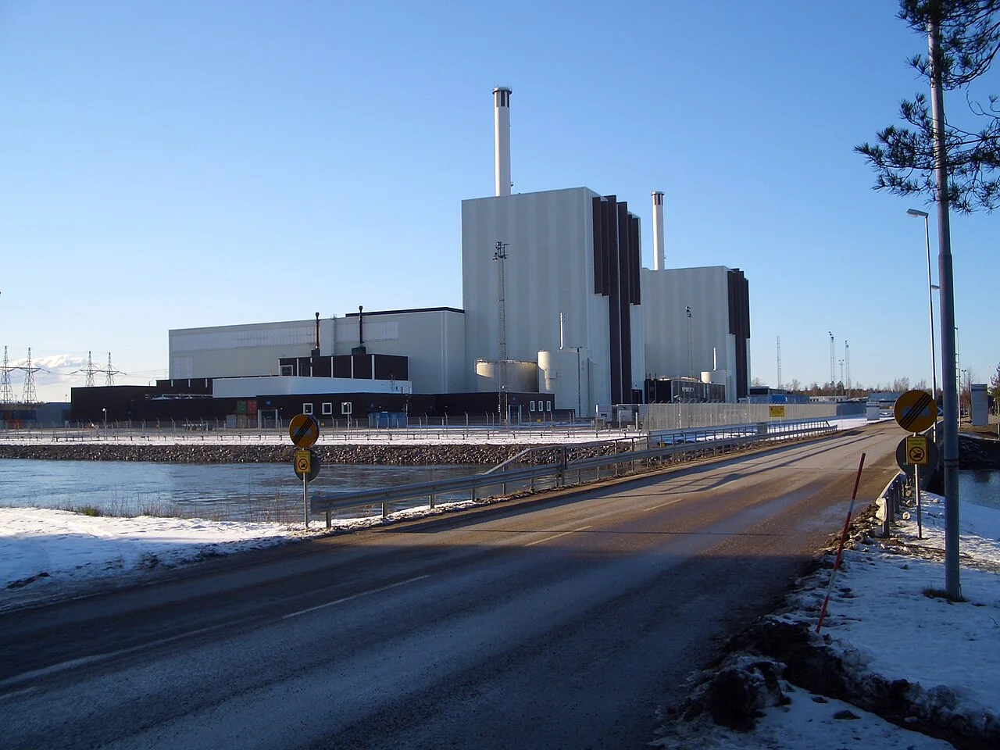
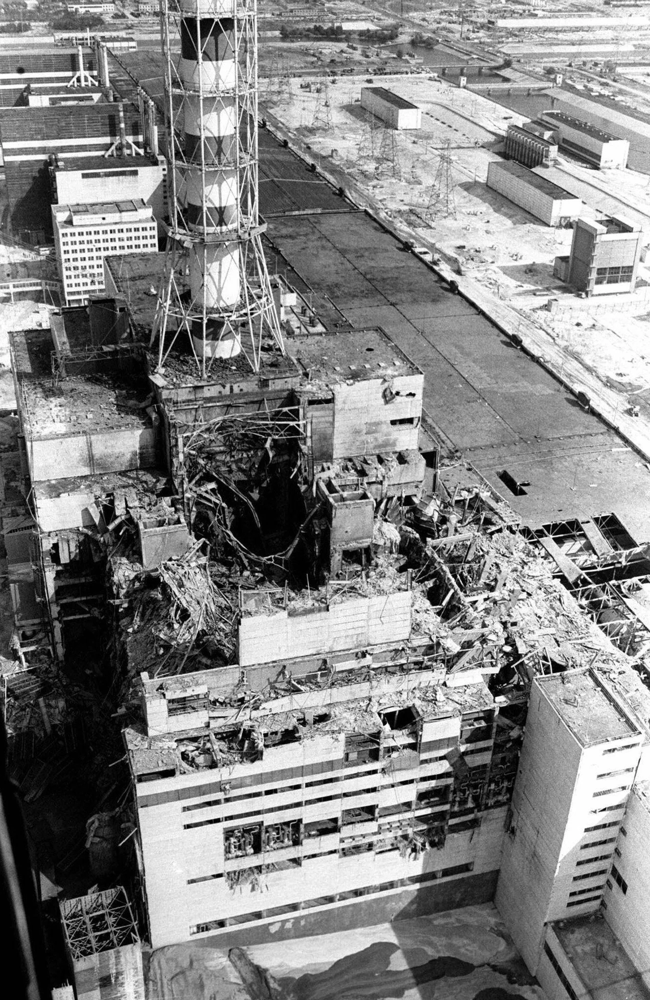

Nuclear History · 255
The Shoes That Set Off the Alarm — the Chernobyl Accident (1986) and 1:23 a.m. at Unit 4
A test at an unstable low power, an emergency button that briefly made things worse, and a Swedish radiation portal that told the world.
At 1:23 a.m. on 26 April 1986, a safety test at Unit 4 of the Chernobyl nuclear power plant in Soviet Ukraine ended in two explosions that destroyed the reactor. Two days later, workers' shoes set off radiation alarms at a power plant in Sweden, and the Soviet Union admitted the accident in a 20-second television report. This is how the night unfolded and what the first eighteen days looked like.
An alarm at the wrong plant
On the morning of Monday 28 April 1986, the radiation portals at the entrance of the Forsmark nuclear power plant in Sweden began to alarm. The contamination was not coming from inside the plant. It was on the shoes of workers arriving for their shift. Staff first suspected a leak of their own and searched for one, but there was none. The dust had been carried on the wind from the Soviet Union, more than 1,000 km away. [4]

Two days earlier: one test before a shutdown
The story had started two days earlier at Unit 4 of the Chernobyl nuclear power plant in the Ukrainian Soviet Socialist Republic. Unit 4 was an RBMK-1000, the graphite-moderated, boiling-water channel reactor the Soviet Union was building in large numbers, with a thermal output of 3,200 MW. Pripyat, the town built for the plant's workers, lay about 3 km away. Mikhail Gorbachev had launched his policy of openness only a year or so before, and the Soviet state was still far from used to sharing bad news. [1]
Before a planned maintenance shutdown, the operators were to run a test. If the plant lost its external power, the emergency diesel generators needed about a minute to come up to speed. The question was whether the turbine, still spinning under its own momentum, could keep the main circulating pumps running long enough to bridge that gap, rather like a bicycle wheel that keeps turning after you stop pedalling. [1]
Twenty-four hours of power reduction, and four seconds
The power reduction began at 1:06 a.m. on 25 April. By the afternoon the reactor was at roughly half power, when the Kiev grid controller asked the plant to wait because electricity was needed for the evening peak. Permission to continue came only at 11:04 p.m., so the test passed to the night shift. It was directed by deputy chief engineer Anatoly Dyatlov (1931–1995); at the reactor controls sat Leonid Toptunov, aged 25. [6]
At 12:05 a.m. on 26 April the output stood at 720 MW. Soon afterwards it plunged to 30 MW or less. By withdrawing many control rods the operators brought it back to around 200 MW, far below the 700–1,000 MW planned for the test, in an unstable state and with some automatic safety functions switched off. The test went ahead anyway. [5]
![Line chart of Unit 4 thermal power on a logarithmic scale from 1:06 a.m. on 25 April to 1:23 a.m. on 26 April 1986: from the rated 3,200 MW down to about 1,600 MW, held from 14:00 to 23:04, then 720 MW at 00:05, a dashed drop to 30 MW or less and a recovery to about 200 MW, below a shaded band for the planned 700 to 1,000 MW; an enlarged panel of the last 50 seconds shows the test starting at 01:23:04, AZ-5 pressed at 01:23:40, power above 530 MW three seconds later and an estimated peak near 30,000 MW](../../assets/images/history/255-chernobyl-accident/fig1-unit4-power-log.webp)
At 1:23:04 a.m. the steam to the turbine was shut off and the test began. Thirty-six seconds later, at 1:23:40, someone pressed AZ-5, the emergency shutdown button. Instead of falling, the power passed 530 MW within three seconds and, by estimate, surged to around ten times the rated output. A steam explosion was followed two to three seconds later by a second explosion, which blew off the reactor lid and the roof of the building. [1] [6]
Why the brake worked like an accelerator
The RBMK had a positive void coefficient: when the cooling water boiled and more steam bubbles formed, the chain reaction grew stronger rather than weaker. On top of that, the control rods had graphite sections at their tips. As a rod first entered the core, the graphite pushed water out of the bottom of the channel, so for the first few seconds the rods added reactivity instead of removing it. It was like a car that briefly speeds up the moment you touch the brake. Just how much weight to give the design flaws and how much the way the reactor was operated would be judged differently by successive official reports. [1] [5]
The people who ran towards it
Two plant workers died in the explosions; the body of one of them was never recovered. Firefighters led by Lieutenant Volodymyr Pravyk had the fires on the roof out by about 5 a.m., but at a terrible cost. Among those on site, 134 people were confirmed to have acute radiation syndrome, and 28 of them, including six firefighters, died within the following weeks and months. [1]

From 2 p.m. on 27 April, buses were assigned to each apartment block, and about 45,000 people left Pripyat; sources give figures of up to around 50,000. About ten days after the accident the evacuation zone was widened from a radius of 10 km to 30 km, and by 14 May about 116,000 people had left their homes. From the second to the tenth day, helicopters dropped some 5,000 tonnes of boron, dolomite, sand, clay and lead onto the wreck, yet the core went on releasing radioactive material until around 10 May. [1] [2]
Sweden knew first
At 9:02 p.m. on 28 April, the evening of the Forsmark alarm, the Soviet television news programme Vremya carried an item of about 20 seconds: "There has been an accident at the Chernobyl Nuclear Power Plant. One of the nuclear reactors was damaged." Gorbachev himself did not speak about the accident on television until 14 May, eighteen days later. [6]
![Infographic timeline from 26 April to 14 May 1986 with event cards: Unit 4 explodes at 01:23 on 26 April; Pripyat evacuated from 14:00 on 27 April; Forsmark alarm and Vremya report on 28 April; about 5,000 tonnes dropped by helicopter on days 2 to 10; evacuation zone widened from 10 to 30 km about ten days later; core fire dies down around 10 May; Gorbachev on television on 14 May. Number cards below: 2 killed by the explosions, 134 confirmed with acute radiation syndrome of whom 28 died, about 14 EBq total release, 85 PBq of caesium-137](../../assets/images/history/255-chernobyl-accident/fig2-first-18-days.webp)
What was released, and how to read the health figures
In total about 14 EBq (14 × 1018 becquerels) of radioactivity was released, more than half of it as noble gases. The release included about 1.8 EBq of iodine-131, which concentrates in the thyroid, and about 85 PBq of long-lived caesium-137. On the International Nuclear and Radiological Event Scale (INES), introduced later, Chernobyl is rated Level 7, the highest. [1]
| Measure | Value | Type |
|---|---|---|
| Killed by the explosions | 2 | Observed |
| Acute radiation syndrome, confirmed / died in 1986 | 134 / 28 | Observed |
| Deaths directly attributed to radiation by mid-2005 | Fewer than 50 | Observed |
| Thyroid cancers in those exposed as children or adolescents, by 2005 | More than 6,000 | Observed |
| Possible eventual deaths among the ~600,000 most exposed | Up to about 4,000 | Model projection |
The health figures need to be read carefully. By mid-2005, fewer than 50 deaths had been directly attributed to radiation from the accident. Among people who were children or adolescents in 1986, more than 6,000 thyroid cancers had been diagnosed by 2005, mostly linked to iodine-131 in contaminated milk. The often-quoted figure of "up to about 4,000" deaths is a model-based projection over the lifetimes of the roughly 600,000 most exposed people, not a count of deaths that have occurred. [2] [3]
A concrete cover and an open question
By the end of 1986 the ruined unit had been enclosed in a concrete "sarcophagus", and in November 2016 a giant arched structure, the New Safe Confinement, was slid on rails over the top of it. In August 1986 Valery Legasov (1936–1988) of the Soviet government commission presented his country's account at an International Atomic Energy Agency meeting in Vienna, and in July 1987 a court found six people, Dyatlov among them, guilty. [1] [2]
The question of who or what was to blame stayed open for years. Chernobyl showed what can happen when design weaknesses meet an operating culture that puts the schedule ahead of safety, and it showed that radioactivity does not stop at borders. The shoes at Forsmark were the proof.